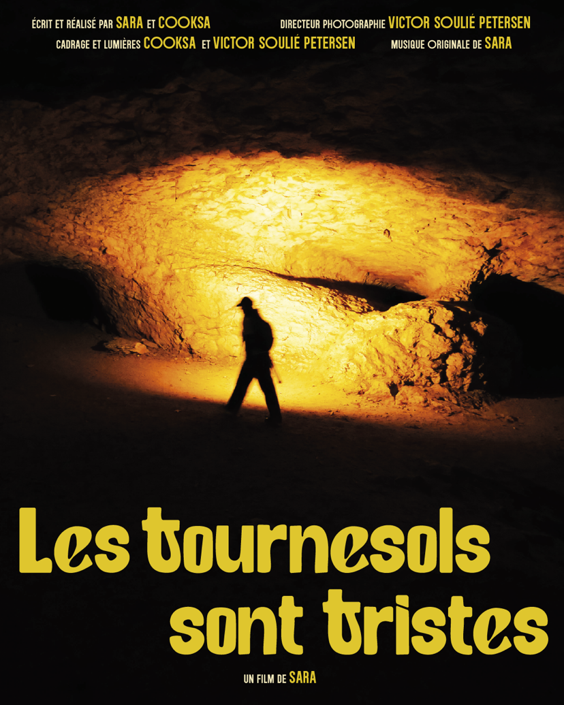

Les tournesols sont tristes, documentary film, 2025

Director : Sara and Cooksa
Photography diredctor by Victor Soulié Pertersen
Lights by Cooksa and Victor Soulié Pertersen
Sound by Sara
Sound mixage and mastering by Charlène Levasseur
The End Stage, documentary film, 2025

Premiere coming in 2025. An independent documentary featuring interviews with some interesting people, including Slavoj Zizek and Temple Grandin, among others. The film is based around the idea posed by philosopher Walter Benjamin that capitalism is a train that eventually ends in a head-on crash
Director : Seungjae Oh
Design animations, title and endtitle sequence by Aaron Björk
Ending title song, sound mixage and mastering by Charlène Levasseur
Sound by Kasper Kaae, Petra
Sound design by Nat Bradley
Photography film, restitution of workshop with Gabrielle Duplantier, 2025
An independent photography film featuring interviews images taken in a intensive workshop during summer 2025, including images from the participants
Director : Julia Castel and Gabrielle Duplantier
Video production and photography editing : Julia Castel and Patricia Morosan
Sound editing by Charlene Levasseur
Photography film, restitution of workshop with Michael Ackerman, 2024
An independent photography film featuring interviews images taken in a intensive workshop during summer 2024, including images from the participants
Director : Julia Castel and Michael Ackerman
Video production and photography editing : Julia Castel and Patricia Morosan
Sound design by Charlene Levasseur
Photography film, restitution of workshop with Patricia Morosan, 2024
An independent photography film featuring interviews images taken in a intensive workshop during summer 2024, including images from Anna Sweden, Marie Julliard, Vincent Boissonnat, Catherine, Virginie Gueguen.
Director : Julia Castel and Patricia Morosan
Video production and photography editing : Julia Castel and Patricia Morosan
Mixed : Charlene Levasseur and Marie Deback Rodes
Sound design by Charlene Levasseur
Photography film, Croisement, restitution of resicendy with Pauline Dupin, 2024

Director : Pauline Dupin
Producer : Mediatheque d'Estretefond, Aurore Degoit, Dorris France-Oillan Menyé et Cathy Tran Tu San
Photographies : Pauline Dupin
Video production and photography editing : Pauline Dupin and Maxime Duhamed
Sound design by Charlene Levasseur
VIDEO ORDER
Summer's Cell, video clip 5:59, 2020
This "Summer's Cell" video clip was made for the artist Halosaur to mark the release of his album "Lonely Shapes" on Rythm and Cult. Filming took place in the Oberschoneweide forest, Berlin, Germany
Label : Rhythm Cult
Music : Halosaur
Video producer : Charlene Levasseur
Actress : Julia Castel
Don’t Walk Alone, video clip 4:00, 2019
This music video, built in collaboration with the music producer Pablo Mateo. He was inspired by the film Annihilation by Alex Garland. Charlene integrated images that she tooks in Berlin's street. She comes to transform this reel images in a fantastic way with the help of her digital skills, this video grouping their common ideas
Label : Figure
Music by Pablo Mateo
Video producer : Charlene Levasseur
I Know You Wanna Bitch, video clip 3:36, 2021
Here my interpretation of the single of Wei.xzy. "I know the feeling when things ain't going the way I thought they would. I call these times a stupid bitch. These two magic words set the rhythm. There are four versions of a stupid bitch for y'all: trip original, accelerated in the interpretation of Roma Zuckerman, hypnotizing, as if it would be under thickened water, Bonus. Minimalistic by Beennooutside
Label : Collective Russia
Music : Wei.xzy
Master : Artyom Tuwalski
Video producer : Charlene Levasseur
Actress : Aya Ando and Kitty4000
Artwork : Eleonore Verger